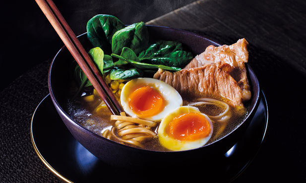
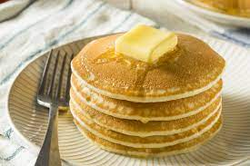
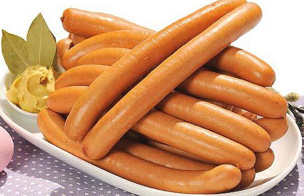
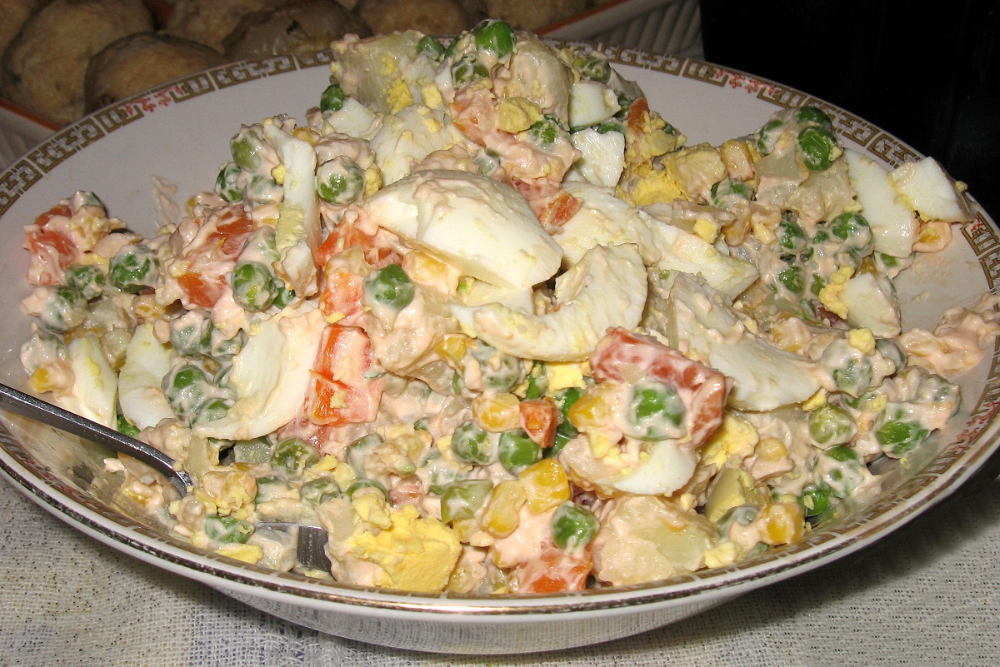

O gellato é uma das sobremesas mais apreciadas tanto em Itália, como no resto do mundo, em qualquer época do ano,
até no inverno quando as temperaturas são mais baixas.
Ramen

Fig. 2 - Ramen
Servido numa taça larga e funda, o ramen é uma sopa de origem japonesa feita com vários ingredientes,
dos quais devem constar a carne, a massa noodle, o ovo e os vegetais.
Panquecas americanas

Fig. 3 - Panquecas
Bastante populares por toda a américa, as panquecas americanas são conhecidas pela sua grossura e como sendo um
dos pequenos-almoços mais consumidos devido à sua variedade em termos de toppings.
Salsichas frankfurt

Fig. 4 - Salsichas
Vindas da Alemanha, as salsichas frankfurt são abundantes nos super-mercados de todo o mundo,
e são uma das comidas de mais rápido e fácil consumo pois pode-se acompanhar com praticamente tudo.
Barbebue coreano
Fig. 5 - Barbecue coreano
O barbecue coreano é um dos métodos mais populares na coreia de grelhar carne de vaca, porco e frango. Estes pratos
são normalmente preparados em grelhadores que funcionam a gás ou carvão, que estão embutidos na própria mesa de jantar, ou
são fornecidos aos clientes.
Salada russa

Fig. 6 - Salada russa
Prática, fresca, leve e fácil de preparar, a salada russa é uma mistura de vegetais coloridos, envolvidos em maionese,
e ovos de gema firme e macia.